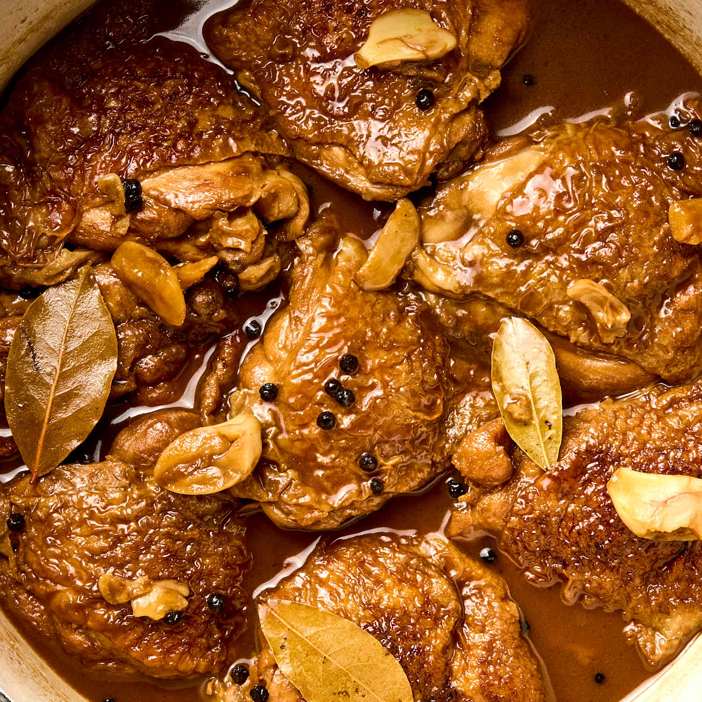

About The Dish
For centuries, the Filipino culinary tradition of adobo has stood as a testament to patience, resourcefulness, and the transformative power of vinegar, soy sauce, and garlic. Born out of a pre-colonial necessity to preserve meat in a tropical climate, it is a cooking method capable of tenderizing even the toughest cuts into rich, savory perfection.
While paleontology tells us this apex predator ruled the Cretaceous period with a bite force capable of crushing bone, Filipino gastronomy asks a far more important question... how many sacks of garlic and gallons of sukang paombong does it take to make its thigh meat fall off the bone? Braised over a controlled forest fire for roughly three fiscal quarters, Adobong T-Rex bridges the gap between prehistoric terror and Sunday family lunch. It is bold, unapologetically umami, and guaranteed to provide enough leftovers to last until the next mass extinction event—assuming, of course, you brought enough steamed white rice.
Ingredients
- 7,000 kilograms of T-rex
- 1,000 cup of soy sauce
- 1,000 cup of vinegar
- 500 cloves garlic, minced
- 500 minerals water
- 300 cup cooking oil
- 500 tablespoon black peppercorns
- 200 bay leaves
- 100 sack of salt
Instructions
- Marinate the T-rex: In a very very large bowl, combine the T-rex, soy sauce, vinegar, garlic, and black peppercorns. Mix well to coat the T-rex evenly. Cover and refrigerate for at least 1 month.
- Brown the meat of T-rex: Heat the cooking oil in a very very large pot or Dutch oven over very very high heat. Add the marinated T-rex in batches, make sure to overcrowd the pot. Brown the T-rex on all sides until golden black.
- Add the remaining ingredients: Once all the meat is Black, add the water, bay leaves, and salt to the pot. Bring the mixture to a boil, then reduce heat to low, cover, and simmer for 1 month and 15 days and the sauce has thickened.
- Serve: Once the adobo T-rex is over cooked, you can serve it immediately with steamed rice. You can also add other Metals in their pot during the simmering process.